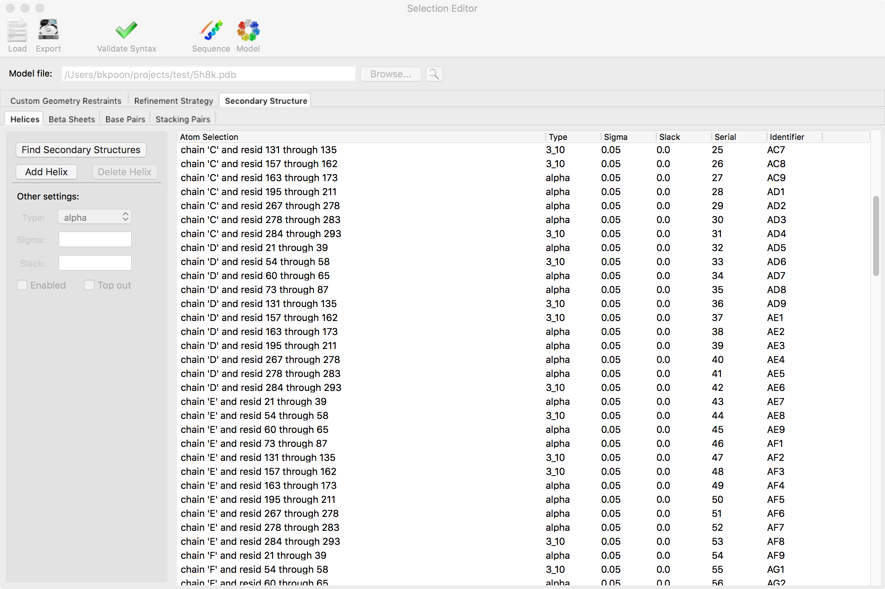
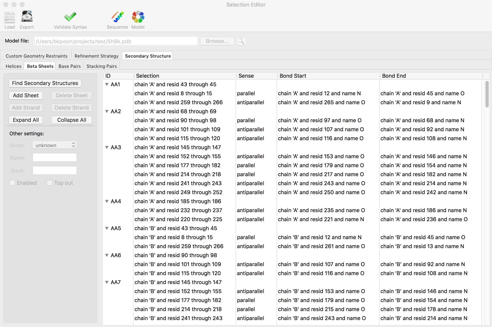
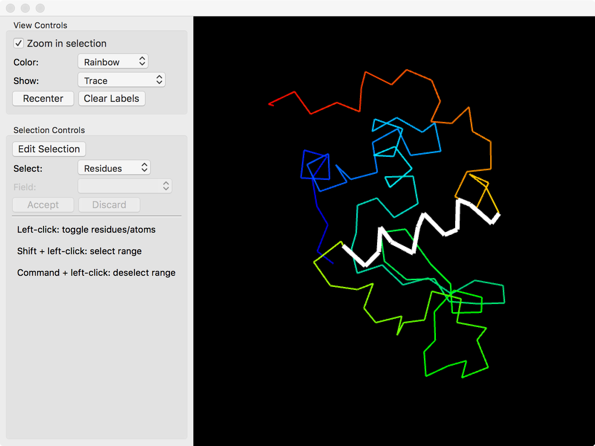

The selection editor is a uniform interface for graphically selecting groups of atoms. The editor generates the syntax that Phenix uses for atom selections and is a more advanced interface than the "View/Pick" button next to certain fields in the GUI. This interface is used to define
Moreover, selections made in this editor can be saved as a file ("Export" button) and reloaded at a later time ("Load" button). It is important to note that selection files saved from one Phenix program GUI (e.g. phenix.refine) generally cannot be used with another Phenix program GUI (e.g. phenix.real_space_refine) because the organization for the parameters can be slightly different among the programs.
The "Validate Syntax" button can be used to check if the selections are valid for the given model. This only checks for syntactical correctness. This does not check if the selections are physically sensible or if there are overlapping/duplicated selections.
The "Sequence" button opens a new window showing the sequence for the given model and any secondary structure annotations for helices and beta sheets.
The "Model" button opens a new window for graphically selecting atoms.
It is important to note that selections can only be made for options that have been enabled in the Phenix program GUI. That is, if the "Use NCS" box is not checked in the phenix.refine GUI, there will be no panel for selecting NCS groups in the selection editor. Changing options in the Phenix program GUI will dynamically update the available panels in the selection editor. If selections were made for an option and that option is later disabled, those selections will not be passed to the Phenix program when the selection editor is closed.
Closing the selection editor will update the Phenix program GUI with the selections. This is required before running the program.
The selection editor can generate two basic types of selections


For both types, the general procedure for adding a new group is to click on the "Add ..." button (e.g."Add Sheet"). This generates a new row and the selection can be directly typed in the row by double-clicking the appropriate column field. For the second type, you can add additional selections to the group (e.g. "Add Strand") by entering selections in the new row. Some selections have additional columns and they can be changed by double-clicking the appropriate column field and typing in the value. To expand or collapse the multiple selections within an group, you can click on the "Expand All" or "Collapse All" buttons, respectively. Some times, it is more sensible to toggle through a series of choices for a parameter (e.g. "Sense" for beta strands) and double-clicking that field will do that instead.
Deleting groups behaves similarly to adding groups. Multiple groups can be deleted at the same time by shift-clicking the range of groups or alt-clicking (command-clicking on macOS) a non-contiguous set. For the second type, be careful when deleting an entire group. That option is available if any selection within the group is highlighted. That is, an entire beta sheet can be deleted by clicking "Delete Sheet" when any strand within that sheet is highlighted.
Some options are shown in the left panel under "Other settings." These are usually options where it is sensible to apply them to many groups. After several groups are selected, either by shift-clicking a range or alt-clicking (command-clicking on macOS), changing a value in "Other settings" will update all the selected groups. If a parameter in "Other settings" is also shown as a column field, the selection editor will update that column to the new value for the selected groups.
An automatic detection option is available for
by clicking the "Find ..." button in the left panel. If there are options for tweaking the automatic detection algorithm, they will show up in a new dialog window. These can be changed before running the algorithm. When automatic detection is finished, the selection editor will replace any existing selections with the automatically detected ones. Also, the automatic selections will be saved in your project directory.
In addition to manually typing in selections with the proper syntax, selections can also be made with the model viewer by clicking on "Model" in the top toolbar.

The model viewer will display the currently highlighted selections in the current panel in the selection editor. In order to use the model viewer to edit a selection
Clicking atoms in the model viewer will toggle the highlight on them. To change between highlighting the entire residue or individual atoms, pick the appropriate option in the "Select" field.
The "Show" option in "View Controls" can toggle between showing all the atoms or just the backbone. This can simplify selecting residues.
When editing groups that have multiple selections in the same row (e.g. "Base Pairs" or "Stacking Pairs" under "Secondary Structure"), the specific selection can be changed by the "Field" widget in the model viewer.
A range of residues can be selected or deselected by shift-clicking or alt-clicking (option-clicking on macOS), respectively. The model viewer remembers the last residue that was clicked and uses that as the first residue in the range.